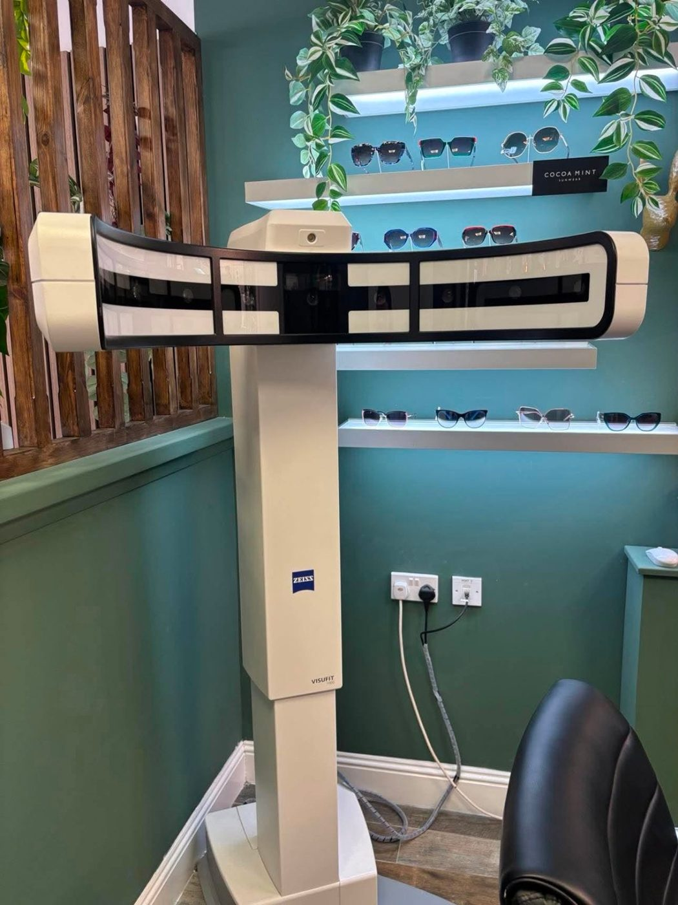

ZEISS SmartLife
Single vision and varifocal lenses designed for today's connected, on-the-move lifestyle — switching constantly between phone, people and the world around you.

There is an enormous variety of lenses from different manufacturers, at very different prices. Our qualified Dispensing Optician will advise you and help you choose the lenses most suitable for you.
As a ZEISS partner practice, we have access to the complete ZEISS range of spectacle lenses. ZEISS is renowned for being at the forefront of lens technology and coatings, and every premium ZEISS lens we fit comes with a hard coat, anti-reflection coating, oleophobic (smudge-resistant) coating and full UV protection.

Your lenses only perform at their best when they're positioned perfectly in front of your eyes. That's why we measure with the ZEISS VISUFIT 1000 — one of the most advanced centration systems available.
It's quick, comfortable and part of every premium lens fitting. Your VISUFIT measurements, your prescription and a scan of your frame are then sent digitally to ZEISS to make your lenses — see the full journey.
Many people benefit from more than one pair — one for everyday, one for the screen, one for the road or the sun. We'll recommend the lenses that genuinely suit the way you live.
Single vision and varifocal lenses designed for today's connected, on-the-move lifestyle — switching constantly between phone, people and the world around you.
Clear vision far, near and in between, with no visible lines — precisely fitted using our ZEISS VISUFIT 3D measurements.
Find out moreFor hours at a screen or desk: relaxed, comfortable vision at computer and reading distances, with less strain by the end of the day.
Your prescription fine-tuned to 1/100th of a dioptre from your eye's individual profile, for sharper night vision, less glare and better contrast.
Find out moreOptimised for driving, with zones designed for the road, the dashboard and your mirrors, and help with glare and vision in low light.
Clear indoors and darkening quickly outdoors — with blue light filtering built in. One pair for inside and out.
Prescription sun lenses in solid, graduated, polarised and mirrored options.
Find out moreThe next generation of blue-light-filtering lenses, clear in appearance for everyday and screen use.
Specially designed lenses to help slow the progression of short-sightedness (myopia) in children.
Find out morePrescription sports glasses and swimming goggles, so you can see clearly whatever you do.
All ZEISS lenses can be finished with DuraVision coatings for clarity, durability and easy cleaning, and ZEISS UVProtect gives full UV protection even in clear lenses.
A simple lens with one focal length — but plenty of choice in thickness, coatings and design.
A traditional lens with two focal lengths, recognisable by the classic line or “D” shape.
The most advanced lens, with several focal areas and no visible line between them.
Book your eye examination online in a few quick steps, or call us – we're always happy to help.